Пластики и полимеры
01- Пластик
- ПВХ
- Полистирол
- Акрил
- Оргстекло
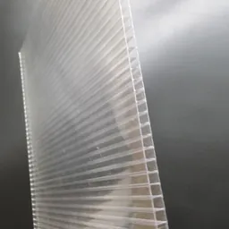
Поликарбонат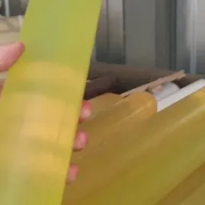
Капролон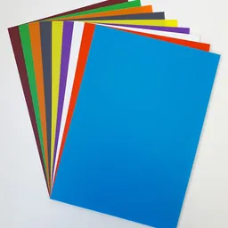
Полипропилен
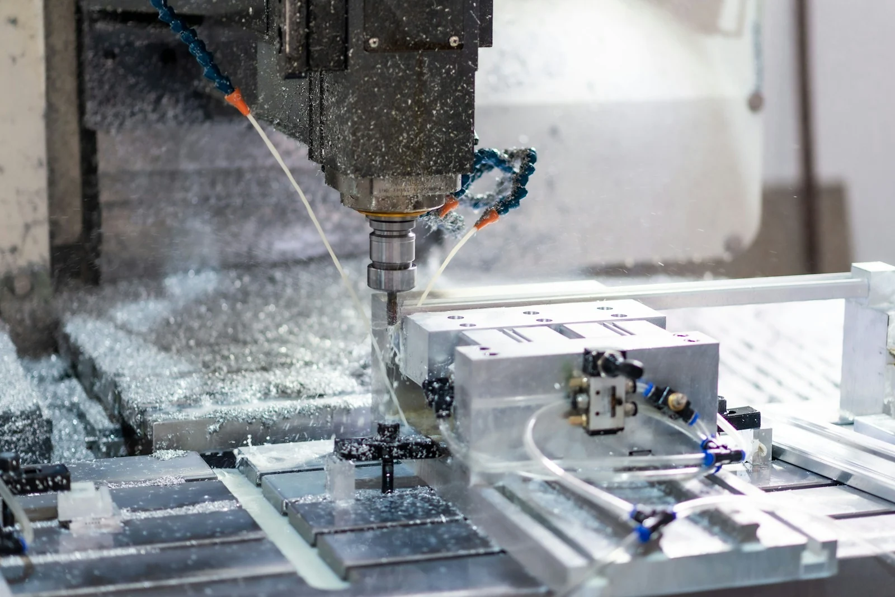
Фрезерная резка и раскрой листовых материалов по чертежу или макету. Изготовление деталей из пластика, фанеры, МДФ, композитных и других материалов. Поможем уточнить задачу и подготовить запрос на расчёт
Демонстрационная фотография технологии, не оборудование и не выполненный заказ i-cut.pro.
Для расчёта укажите материал, размеры и количество деталей. Возможность обработки подтверждаем после рассмотрения задачи.

Поликарбонат
Капролон
Полипропилен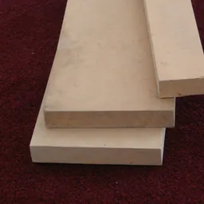
МДФ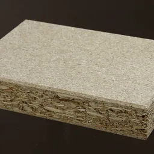
ДСП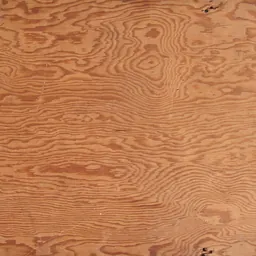
Фанера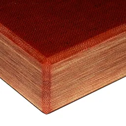
Текстолит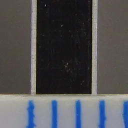
Алюминиевые композитные панели (АКП)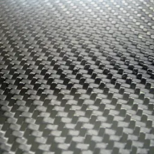
Композитные материалы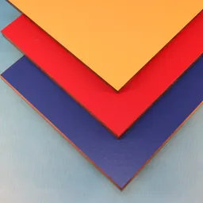
HPLВозможность обработки, ограничения по размерам и толщине материала уточняются после рассмотрения задачи. Источники изображений.
Опишите форму будущей детали или приложите макет. Доступность операций и параметры обработки подтверждаются после оценки задачи.
Изготовление элементов нестандартной формы по макету.
Работа с плавными линиями, радиусами и сложными контурами.
Вырезание деталей по заданному контуру.
Подготовка и резка элементов по заданной схеме.
Схемы иллюстрируют виды запросов. Они не подтверждают технические возможности оборудования, точность, радиусы или допустимую толщину.
Места для реальных фотографий по направлению «Фрезерная резка ЧПУ». Заполним после получения и согласования материалов компании.
Здесь появится подтверждённая работа: фрезерная резка чпу. Фотография и описание ещё не добавлены.
Здесь появится подтверждённая работа: фрезерная резка чпу. Фотография и описание ещё не добавлены.
Здесь появится подтверждённая работа: фрезерная резка чпу. Фотография и описание ещё не добавлены.
Демонстрационные карточки: выполненные заказы здесь пока не представлены. Перед публикацией раздел заполняется подтверждёнными работами или скрывается.
Направление «Фрезерная резка ЧПУ» уже выбрано в форме. Расскажите о задаче и оставьте удобный способ ответа. Отправка пока не подключена.